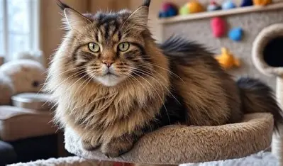
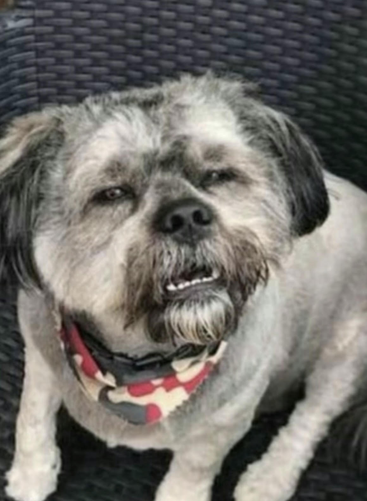

Web Project
What helped me in this project
Maincoon Cat
I been a dog person my entire life. I've had about 4 grown dogs and 8 puppies my who life along with one russian blue cat. I'm not very fond of cats but if I ever get one I would want a Maincoon because I love how big and furry they get, they also look unique compared to other cats.
Confused Dog
This is one of my favorite pictures. The reason why I chose this picture is because i always and i mean always make this face whenever someone says something unheard of or ignorant. To the point of me not being able to give a valid response
Rotating Sun

I chose this image of the sun because the sun is my favorite star, giving people life as well as benifits helping plants and humans grow as they age providing endless energy.
What I Learned
- I learned how to create links for image turning them into hyperlinks.
- I learned how to make my text, like making fonts look more presentable for the eye.
- I learned the differences between JPG, GIF, WEBP, PNG and SVG
Learning how there are differents ways to create links, images and making things more presenible for the eye has been challenging for me but also fun at the same time. This project is fun to do as well as a brain teaser to me. I am looking forward to learn more.